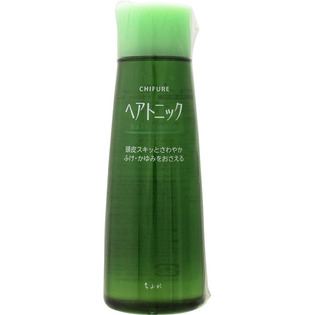

返回列表
产品名称：ちふれ ヘアトニックＮ

ちふれ化粧品 ちふれ ヘアトニックＮ １５０ｍＬ
メーカー ちふれ化粧品
JANコード 4974972107813
商品の特徴
ふけ・かゆみをすっきり抑えて、頭皮も髪もすこやかに。
成分・分量
清涼成分 エタノール58.72% メントール0.50% トウガラシエキス0.02%
賦香成分 香料0.20%
保湿成分 BG0.10% オタネニンジン根エキス適量 センブリエキス適量
基剤 水
用法及び用量
適量を頭皮につけ、マッサージするようにしてなじませます。